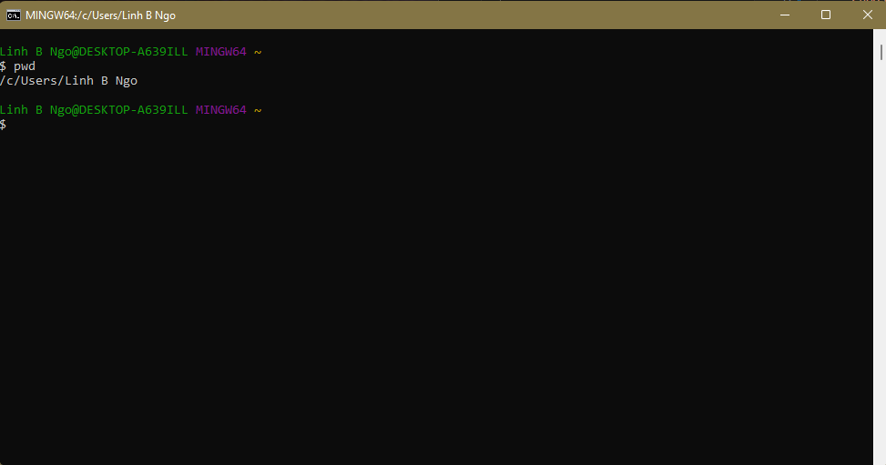

Research Computing on Picotte
Contents
Research Computing on Picotte#
Instructor: Linh B. Ngo
Email: lbn28 AT drexel DOT edu
Workshop Description#
In this workshop, participants are introduced to the Picotte Cluster, Drexel University’s high-performance computing resource. We will go over Picotte’s structure, its basic usage, and how to submit computational tasks to the cluster.
Prerequisites#
Participants should check and complete the following steps prior to the workshop.
Prior to workshop, Windows users should download and install Git for Windows. If you already have this installed, it is perhaps time for an update, as the latest Git for Windows software will have Git Bash integrated with Windows Terminal.
After running the installer, make sure the following steps are done correctly:
Select Components: check the Add a Git Bash Profile to Windows Terminal box.Choose the default editor used by Git: scroll up on the dropdown list and choose User the Nano editor by default.Adjusting the name of the initial branch in new repositories: ensure that Let Git decide is selected.Adjusting your PATH environment: ensure that Git from the command line and also from 3rd-party software is selected.Choosing the SSH executable: select Use bundled OpenSSH.Choosing HTTPS transport backend: ensure that Use the native Windows Secure Channel Library is selected.Configuring the line ending conversion: ensure that Checkout Windows-style, commit Unix-style line endings is selected.Configuring the terminal emulator to use with Git Bash: ensure that Use Windows’ default console window is selected.Choose the default behavior of 'git pull': ensure that Fast-forward or merge is selected.Choose a credential helper: ensure that “Git Credential Manager” is selected.Configuring extra options: check both boxes on Enable file system caching and Enable symbolic links.Do not check any
Configurating experimental optionsboxes.Click on “Install”. = Click on “Finish”.
To launch Git Bash, you can launch the Git Bash app directly via Windows Main Menu

You can also launch Git Bash via Windows Terminal. Windows Terminal is a powerful
terminal program intended to replace the older Command Prompt and Power Shell
launchers. The terminal is available by default with Windows 11. For earlier version,
it can be downloaded and installed via Windows App Store. More detailed instructions
can be found at https://learn.microsoft.com/en-us/windows/terminal/install.

For Mac users, you can find your Linux-based terminal app by click the search icon (magnifying
glass icon in the top right corner of your screen) to open the search box and start typing
terminal into the box. The Terminal app will show up, and you can launch the app directly.